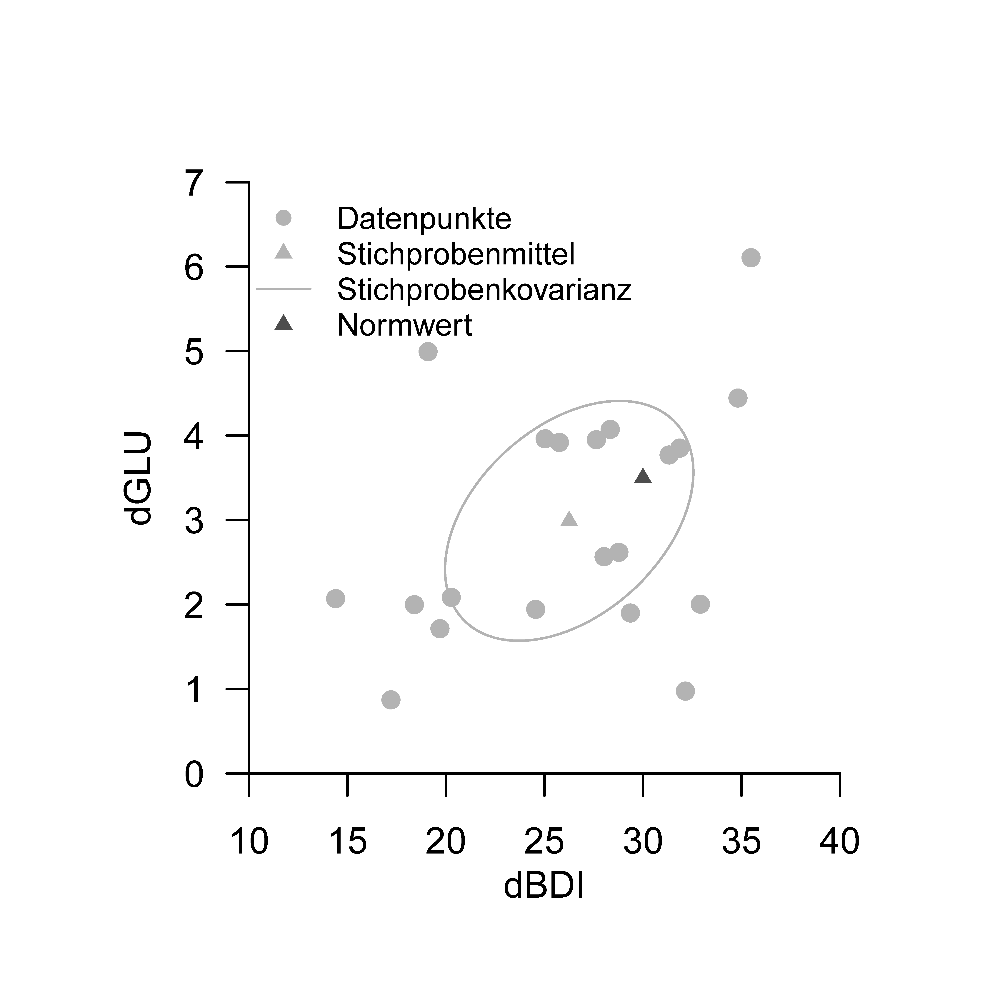
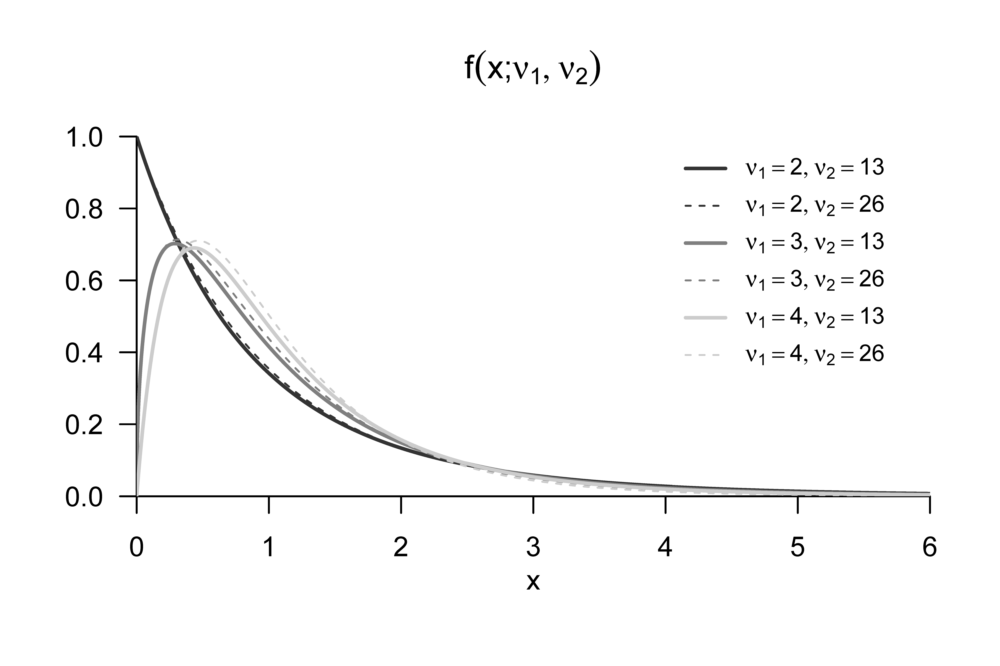
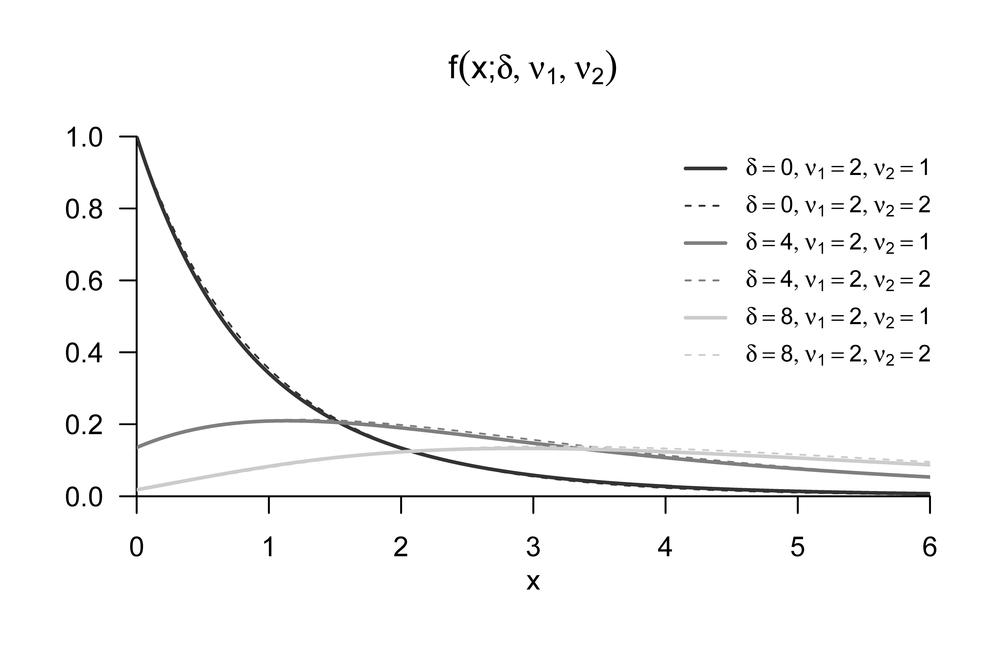
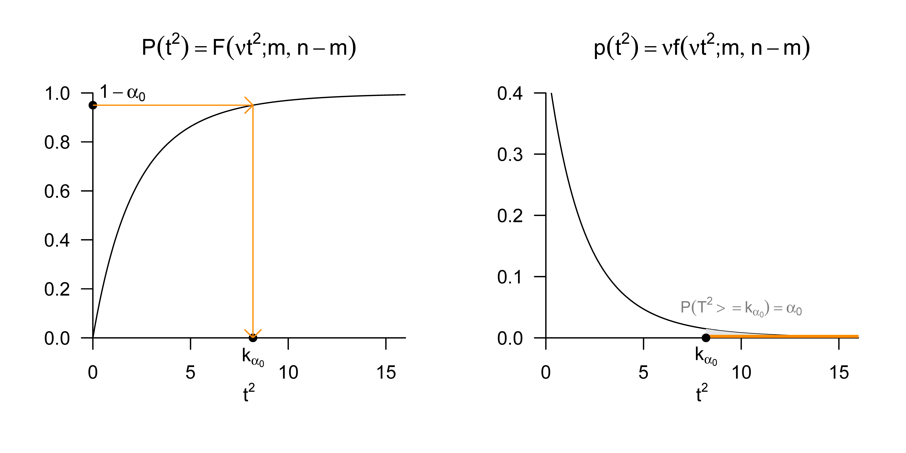
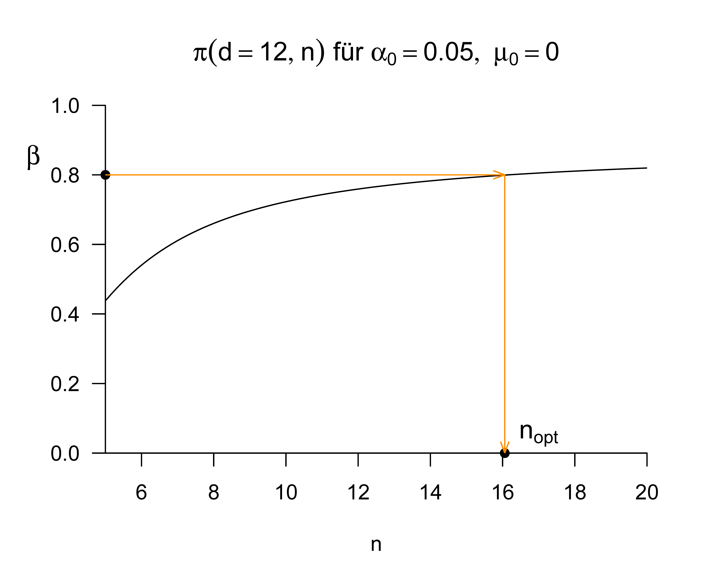

| dBDI | dGLU |
|---|---|
| 35 | 6.1 |
| 25 | 4.0 |
| 20 | 1.7 |
| 29 | 2.6 |
| 29 | 1.9 |
| 17 | 0.9 |
| 33 | 2.0 |
| 28 | 4.1 |
| 26 | 3.9 |
| 31 | 3.8 |
| 14 | 2.1 |
| 18 | 2.0 |
| 19 | 5.0 |
| 28 | 2.6 |
| 20 | 2.1 |
| 35 | 4.4 |
| 28 | 4.0 |
| 32 | 3.9 |
| 32 | 1.0 |
| 25 | 1.9 |
46 One-sample T\(^2\) tests
46.1 Application scenario
As in the univariate case, the application scenario of a one-sample T\(^2\) test is characterized by considering \(n\) data points of a sample (group) of randomized experimental units. Generalizing the univariate case, however, the \(n\) data points are multivariate; each data point therefore consists of two or more numbers and can be regarded as a vector in \(\mathbb{R}^m\) with \(m>1\). In analogy to the univariate case, the \(n\) data points are assumed to be realizations of \(n\) independent and identically multivariate normally distributed random vectors. With respect to the identical multivariate normal distribution \(N(\mu,\Sigma)\) of these random vectors, both the true expected-value parameter \(\mu\) and the true covariance-matrix parameter \(\Sigma\) are assumed to be unknown. Finally, we assume that there is interest in an inferential comparison of the true, but unknown, expected-value parameter \(\mu\) with a prespecified value \(\mu_0\), for example \(\mu_0 := 0_m\). As in the univariate case, this application scenario also yields a number of possible hypothesis scenarios, each with different power functions and thus different approaches to size control and sample-size optimization. In this introduction, we only want to examine more closely the scenario of a simple null hypothesis and a composite alternative hypothesis, \[ H_0 :\mu = \mu_0 \Leftrightarrow \Theta_0 := \{\mu_0\} \mbox{ and } H_1 : \mu \neq \mu_0 \Leftrightarrow \Theta_1 := \mathbb{R}^m \setminus \{\mu_0\} \tag{46.1}\]
Application example
For a concrete application example, we consider the analysis of simulated pre-post intervention difference values of BDI scores (dBDI) and glucocorticoid plasma levels (dGLU) which, as shown in Table 47.1, might have been collected in a group of \(n = 20\) patients. Positive values of dBDI and dGLU would correspond to a reduction of depressive symptomatology, whereas negative values indicate a worsening of depressive state.
When applying a one-sample T\(^2\) test to the data of this simulated data set, we assume that the two-dimensional data vectors (dBDI, dGLU) are realizations of \(n = 20\) independently normally distributed two-dimensional random vectors \(y_i \sim N(\mu,\Sigma)\). We further assume that we are interested in quantifying our uncertainty in the inferential comparison of the true, but unknown, expected-value parameter \(\mu \in \mathbb{R}^2\) with a comparison value \(\mu_0 \in \mathbb{R}^2\), for instance a therapy-success norm value.
Independently of this inferential procedure, we first consider some descriptive statistics for this data set as evaluated by the following R code and shown in Figure 46.1. Compared with a therapy norm value of \(\mu_0 := (30,3.5)^T\), the components of the sample mean \(\bar{y} = (26.3, 3.0)^T\) are somewhat smaller, though with non-negligible data variability, reflected in a Mahalanobis distance of \(D = 0.4\) between the sample mean and the therapy norm value with respect to the sample covariance matrix of the data set.
# data description
D = read.csv("_data/702-one-sample-t2-tests.csv") # read data
Y = rbind(D$y_1i, D$y_2i) # data matrix
mu_0 = matrix(c(30,3.5), nrow = 2) # norm value
n = ncol(Y) # number of data points
j_n = matrix(rep(1,n), nrow = n) # 1_n
I_n = diag(n) # I_n
J_n = matrix(rep(1,n^2), nrow = n) # 1_{nn}
Y_bar = (1/n)*(Y %*% j_n) # sample mean
C = (1/(n-1))*(Y %*% (I_n-(1/n)*J_n) %*% t(Y)) # sample covariance matrix
D = t(Y_bar - mu_0) %*% solve(C) %*% (Y_bar - mu_0) # mahalanobis distanceY_bar = 26.25615 2.991039
D = 0.3773184
dBDI, dGLU data of the example data set. Each point visualizes the data of one patient; the sample covariance is shown by the 0.4 isocontour of a two-dimensional normal distribution whose expected-value parameter and covariance-matrix parameter correspond to the sample mean and the sample covariance.
46.2 Model formulation and model evaluation
We first define the one-sample T\(^2\) test model as follows.
Definition 46.1 (One-sample T\(^2\) test model) For \(i = 1,...,n\), let \(y_i\) be \(m\)-dimensional random vectors that model the \(n\) data points of a one-sample T\(^2\) test scenario. Then the one-sample T\(^2\) test model has the structural form \[ y_i = \mu + \varepsilon_i \mbox{ with } \varepsilon_i \sim N(0_m, \Sigma) \mbox{ i.i.d. for } i = 1,...,n \mbox{ with } \mu \in \mathbb{R}^m, \Sigma \in \mathbb{R}^{m \times m} \mbox{ pd} \tag{46.2}\] and the data distribution form \[\begin{equation} y_i \sim N(\mu, \Sigma) \mbox{ i.i.d. for } i = 1,...,n \mbox{ with } \mu \in \mathbb{R}^m, \Sigma \in \mathbb{R}^{m \times m} \mbox{ pd}. \end{equation}\]
The equivalence of the structural form and the data distribution form of the one-sample T\(^2\) test model follows directly with Theorem 29.8 by transforming the random vectors \(\varepsilon_i\) according to Equation 46.2.
46.3 Model evaluation
Test statistic and test
We next define a test statistic for the one-sample T\(^2\) test scenario.
Definition 46.2 (One-sample T\(^2\) test statistic) Given the one-sample T\(^2\) test model and a null-hypothesis parameter \(\mu_0 \in \mathbb{R}^m\), the one-sample T\(^2\) test statistic is defined as \[\begin{equation} T^2 := n(\bar{y} - \mu_0)^T C^{-1}(\bar{y} - \mu_0), \end{equation}\] where \(\bar{y}\) and \(C\) denote the sample mean and the sample covariance matrix of \(y_1,...,y_n\).
The one-sample T\(^2\) test statistic is evidently the Mahalanobis distance of \(\bar{y}\) and \(\mu_0\) with respect to \(C\), scaled by the sample size \(n\) (see Section 45.2). Correspondingly, for a constant sample covariance matrix the one-sample T\(^2\) test statistic \(T^2\) takes larger values for a larger Euclidean distance between \(\bar{y}\) and \(\mu_0\), and for a constant Euclidean distance between \(\bar{y}\) and \(\mu_0\) the value of the test statistic \(T^2\) depends on the magnitude of the data variability. With respect to the distribution of the one-sample T\(^2\) test statistic, we first record the following theorem, which we do not prove.
Theorem 46.1 (Distribution of the scaled one-sample T\(^2\) test statistic) Let \(y_1,...,y_n \sim N(\mu,\Sigma)\) with \(\mu \in \mathbb{R}^m\) and \(\Sigma \in \mathbb{R}^{m\times m} \mbox{pd}\), \[ \nu:= \frac{n-m}{(n-1)m} \tag{46.3}\] and, for \(\mu \in \mathbb{R}^m\), let the one-sample T\(^2\) test statistic be defined as \[\begin{equation} T^2 := n(\bar{y} - \mu_0)^T C^{-1} (\bar{y} - \mu_0). \end{equation}\] Then \[ \nu T^2 \sim f(\delta, m, n-m), \tag{46.4}\] where \(f(\delta,m,n-m)\) denotes the noncentral \(f\) distribution with noncentrality parameter \[ \delta := n(\mu - \mu_0)^T\Sigma^{-1}(\mu - \mu_0) \tag{46.5}\] and with degree-of-freedom parameters \(m\) and \(n-m\).
For a proof of Theorem 46.1, we refer to Hotelling (1931) and Anderson (2003). In this context, we recall the concepts of an \(f\) random variable and a noncentral \(f\) random variable, for which we show exemplary PDFs in Figure 46.2 and Figure 46.3.
Definition 46.3 (\(f\) random variable) \(\xi\) is a random variable with outcome space \(\mathbb{R}_{>0}\) and PDF \[\begin{equation} p_\xi : \mathbb{R} \to \mathbb{R}_{>0}, x \mapsto p_\xi(x) := \nu_1^{\frac{\nu_1}{2}}\nu_2^{\frac{\nu_2}{2}} \frac{\Gamma\left(\frac{\nu_1+\nu_2}{2}\right)}{\Gamma\left(\frac{\nu_1}{2}\right)\Gamma\left(\frac{\nu_2}{2}\right)} \frac{x^{\frac{\nu_1}{2}-1}}{\left(\nu_1 x + \nu_2 \right)^{\frac{\nu_1+\nu_2}{2}}}, \end{equation}\] where \(\Gamma\) denotes the gamma function. We then say that \(\xi\) follows an \(f\) distribution with degree-of-freedom parameters \(\nu_1\) and \(\nu_2\) and call \(\xi\) an \(f\) random variable with degree-of-freedom parameters \(\nu_1\) and \(\nu_2\). We abbreviate this by \(\xi \sim f(\nu_1,\nu_2)\). We denote the PDF of an \(f\) random variable by \(f(x;\nu_1,\nu_2)\), the CDF of an \(f\) random variable by \(F(x;\nu_1,\nu_2)\), and the inverse CDF of an \(f\) random variable by \(F^{-1}(x;\nu_1,\nu_2)\).

Definition 46.4 (Noncentral \(f\) random variable) \(\xi\) is a random variable with outcome space \(\mathbb{R}_{>0}\) and PDF \[\begin{multline} p_\xi : \mathbb{R} \to \mathbb{R}_{>0}, x \mapsto \\ p_\xi(x) := \sum_{k=0}^\infty \frac{e^{-\delta/2}(\delta/2)^k}{\frac{\Gamma(\nu_2/2)\Gamma(\nu_1/2 + k)}{\Gamma(\nu_2/2 + \nu_1/2 + k)}k!} \left(\frac{\nu_1}{\nu_2}\right)^{\nu_1/2 + k} \left(\frac{\nu_2}{\nu_2+\nu_1x}\right)^{(\nu_1+\nu_2)/2 + k} x^{\nu_1/2 - 1 + k} \end{multline}\] where \(\Gamma\) denotes the gamma function. We then say that \(\xi\) follows a noncentral \(f\) distribution with noncentrality parameter \(\delta\) and degree-of-freedom parameters \(\nu_1\) and \(\nu_2\), and call \(\xi\) a noncentral \(f\) random variable with noncentrality parameter \(\delta\) and degree-of-freedom parameters \(\nu_1\) and \(\nu_2\). We abbreviate this by \(\xi \sim f(\delta,\nu_1,\nu_2)\). We denote the PDF of a noncentral \(f\) random variable by \(f(x;\delta,\nu_1,\nu_2)\), the CDF of a noncentral \(f\) random variable by \(F(x;\delta,\nu_1,\nu_2)\), and the inverse CDF of a noncentral \(f\) random variable by \(F^{-1}(x;\delta,\nu_1,\nu_2)\).

In the univariate case, it is well known that the \(F\) statistics of analysis of variance are \(f\) distributed when the null hypothesis is true and noncentral \(f\) distributed when the alternative hypothesis is true. For the case \(\mu = \mu_0\), that is, when the true, but unknown, expected-value parameter is identical to the null-hypothesis parameter, Equation 46.5 implies \(\delta = 0\), and \(f(\delta,m,n-m)\) corresponds to the \(f\) distribution \(f(m,n-m)\).
We further note that, in the univariate case \(m := 1\), Equation 46.3 together with Theorem 46.1 implies that \[\begin{equation} \nu = \frac{n-1}{(n-1)\cdot 1} = 1 \end{equation}\] and, with the sample variance \(S^2\) of a univariate sample, correspondingly implies that \[\begin{equation} T^2 = n\frac{(\bar{y} - \mu_0)^2}{S^2} = \left(\sqrt{n}\frac{\bar{y} - \mu_0}{S} \right)^2. \end{equation}\] This is evidently the square of the familiar univariate one-sample T-test statistic. Thus, by Theorem 46.1, the square of the univariate one-sample T-test statistic is distributed according to \(f(\delta,1,n-1)\). Intuitively and briefly stated, a squared \(t\) random variable is therefore an \(f\) random variable.
From Theorem 46.1, the following forms for the PDF and CDF of the one-sample T\(^2\) test statistic follow immediately.
Theorem 46.2 (PDF and CDF of the one-sample T\(^2\) test statistic) In the one-sample T\(^2\) test scenario, let \[\begin{equation} \nu:= \frac{n-m}{(n-1)m}. \end{equation}\] Then a PDF of the one-sample T\(^2\) test statistic is given by \[\begin{equation}\label{eq:pT1} p_{T^2} : \mathbb{R}_{\ge 0} \to \mathbb{R}, t^2 \mapsto p_{T^2}(t^2) := \nu f(\nu t^2;\delta, m,n-m) \end{equation}\] and a CDF of the one-sample T\(^2\) test statistic is given by \[\begin{equation}\label{eq:PT2} P_{T^2} : \mathbb{R}_{\ge 0} \to [0,1], t^2 \mapsto P_{T^2}(t^2) := F(\nu t^2;\delta, m,n-m). \end{equation}\]
Proof. We first note that the theorem on univariate PDF transformation under linear-affine mappings states that, for a random variable \(\xi\) with PDF \(p_\xi\) and the definition \(y = f(\xi)\) with \(f(\xi) := a\xi + b\) for \(a\neq 0\), a PDF of \(y\) is defined by \(p_y(y) := (1/|a|)p_\xi((y-b)/a)\). In the present case, \(\xi = \nu T^2\) with PDF \(f(\delta,m,n-m)\) and \(y := T^2 = \frac{1}{\nu}\nu T^2\), so \(a = 1/\nu\) and \(b = 0\). With \(\nu > 0\), \(\eqref{eq:pT1}\) therefore follows from \[\begin{equation} p_{T^2}(t^2) = \frac{1}{a}p_{\nu T^2}\left(\frac{t^2}{a}\right) = \nu f(\nu t^2;\delta, m,n-m). \end{equation}\] \(\eqref{eq:PT2}\) then follows from the fact that PDFs of continuous random variables are the derivatives of the corresponding CDFs. By the chain rule of differentiation, \[\begin{align} \begin{split} \frac{d}{dt^2}P_{T^2}\left(t^2\right) & = \frac{d}{dt^2}\left(F(\nu t^2;\delta,m,n-m)\right) \\ & = \frac{d}{dt^2}F(\nu t^2;\delta,m,n-m)\frac{d}{dt^2}\left(\nu t^2 \right) \\ & = \nu f(\nu t^2;\delta,m,n-m) \\ & = p_{T^2}(t^2). \end{split} \end{align}\]
We record that the scaled one-sample T\(^2\) test statistic \(\nu T^2\) is noncentral \(f\) distributed according to \(f(\delta,m,n-m)\), whereas the PDF of the one-sample T\(^2\) test statistic \(T^2\) itself is given by \(\nu f(\nu t^2;\delta, m,n-m)\). We simulate this distribution using the following R code and visualize the simulation in Figure 46.4.
# model parameters
m = 2 # dimensionality of random vectors/data
n = 15 # number of data points
mu_0 = matrix(c(1,1) , nrow = 2) # null-hypothesis parameter
mu = matrix(c(2,2) , nrow = 2) # true, but unknown, expected-value parameter
Sigma = matrix(c(0.5,0.3, 0.3,0.5), nrow = 2, byrow = TRUE) # true, but unknown, covariance-matrix parameter
# simulation
library(MASS) # R package for multivariate normal distributions
nsim = 1e4 # number of simulations/data-set realizations
Yb = matrix(rep(NaN,m*nsim), nrow = 2) # sample-mean array
T2 = rep(NaN,nsim) # one-sample T$^2$ test-statistic array
j_n = matrix(rep(1,n), nrow = n) # 1_n
I_n = diag(n) # I_n
J_n = matrix(rep(1,n^2), nrow = n) # 1_{nn}
for(s in 1:nsim){ # simulation iterations
Y = t(mvrnorm(n,mu,Sigma)) # y_i \sim N(\mu,\Sigma), i = 1,...,n
Y_bar = (1/n)*(Y %*% j_n) # sample mean
C = (1/(n-1))*(Y %*% (I_n-(1/n)*J_n) %*% t(Y)) # sample covariance matrix
T2[s] = n*t(Y_bar - mu_0) %*% solve(C) %*% (Y_bar - mu_0) # one-sample T$^2$ test statistic
Yb[,s] = Y_bar # sample mean for visualization
}
Finally, we define the one-sample T\(^2\) test as a critical-value-based test as follows.
Definition 46.5 (One-sample T\(^2\) test) Given the one-sample T\(^2\) model and the one-sample T\(^2\) test statistic, for a critical value \(k\ge 0\) the one-sample T\(^2\) test is defined as the critical-value-based test \[\begin{equation} \phi(y) := 1_{\{T^2 > k\}} := \begin{cases} 1 & T^2 > k \\ 0 & T^2 \le k \end{cases}. \end{equation}\]
In Definition 46.5, as usual, \(\phi(y) = 1\) represents the act of rejecting \(H_0\), and \(\phi(y) = 0\) represents the act of not rejecting \(H_0\).
Analysis of the power function
To develop procedures for size control (type-I-error limitation) and sample-size optimization (type-II-error limitation) for the test defined in Definition 46.5, we first consider its power function. The following theorem holds.
Theorem 46.3 (Power function of the one-sample T\(^2\) test) Let \(\phi\) be the one-sample T\(^2\) test. Then the power function of \(\phi\) is given by \[\begin{equation} q_\phi : \mathbb{R}^m \to [0,1], \mu \mapsto q_\phi(\mu) := 1 - F(\nu k;\delta_\mu,m,n-m) \end{equation}\] where \(F(\cdot;\delta_\mu, m,n-m)\) denotes the CDF of the noncentral \(f\) distribution with degree-of-freedom parameters \(m\) and \(n-m\) and with noncentrality parameter \[\begin{equation} \delta_\mu := n(\mu - \mu_0)^T\Sigma^{-1}(\mu - \mu_0). \end{equation}\]
Proof. The power function of the considered test is defined as \[\begin{equation} q_\phi : \mathbb{R}^m \to [0,1], \mu \mapsto q_\phi(\mu) := \mathbb{P}_{\mu}(\phi = 1). \end{equation}\] Because the probabilities for \(\phi = 1\) and for the associated test statistic to lie in the rejection region of the test are equal, we first need the distribution of the test statistic. Above, however, we have already seen that \[\begin{equation} \frac{n-m}{m(n-1)}T^2 \sim f(\delta_\mu,m,n-m) \mbox{ with } \delta_\mu := n(\mu -\mu_0)^T\Sigma^{-1}(\mu-\mu_0) \end{equation}\] holds. The rejection region of the considered test is \(A := ]k,\infty[\). Hence \[\begin{align} \begin{split} q_\phi(\mu) & = \mathbb{P}_\mu(\phi = 1) \\ & = \mathbb{P}_\mu\left(T^2 \in \,\,]k,\infty[\right) \\ & = \mathbb{P}_\mu\left(T^2 > k \right) \\ & = 1 - \mathbb{P}_\mu\left(T^2 \le k \right) \\ & = 1 - F(\nu k; \delta_\mu,m, n-m). \end{split} \end{align}\]
We want to consider this power function by example for two scenarios with \(m := 2\) and \(n := 15\) as a function of the critical value \(k\). Figure 46.5 and Figure 46.6 visualize \(q_\phi\) in these scenarios for a null-hypothesis parameter \(\mu_0 := (1,1)^T\) and the true, but unknown, covariance-matrix parameters \[\begin{equation} \Sigma_1 := \begin{pmatrix} 1.0 & 0.0 \\ 0.0 & 1.0 \end{pmatrix} \mbox{ and } \Sigma_2 := \begin{pmatrix} 1.0 & 0.9 \\ 0.9 & 1.0 \end{pmatrix}, \end{equation}\] respectively. In both cases and independently of \(k\), a larger distance of the true, but unknown, expected-value parameter \(\mu\) from the null-hypothesis parameter \(\mu_0\) results in a higher probability that the test \(\phi\) assumes the value \(1\), that is, that the null hypothesis is rejected. The increase of this probability is isotropic in the first scenario, but not in the second scenario because of the form of the true, but unknown, covariance parameter. For a small critical value \(k\), high probabilities of rejecting the null hypothesis are already reached at small distances between \(\mu\) and \(\mu_0\); for a larger critical value \(k\), they are reached only at larger distances. The following R code demonstrates the procedure for evaluating these power functions.
# model parameters
m = 2 # m
n = 15 # n
nu = (n-m)/((n-1)*m) # \nu
Sigma = diag(m) # \Sigma = I_2
iSigma = solve(Sigma) # \Sigma^{-1}
# test parameters
mu_0 = matrix(c(1,1), nrow = 2) # \mu_0
k_all = c(2,4,6) # k <-> \phi
n_k = length(k_all) # number of k values/tests
# q_\phi(\mu) evaluation
mu_min = 0 # \mu_i minimum
mu_max = 2 # \mu_i maximum
mu_res = 1e3 # \mu_i resolution
mu_i = seq(mu_min,mu_max,len = mu_res) # mu_i
q_phi = array(dim = c(mu_res, mu_res, length(k_all))) # q_\phi array
for(k in 1:n_k){
for(i in 1:mu_res){
for(j in 1:mu_res){
mu = matrix(c(mu_i[i],mu_i[j]), nrow = 2) # \mu
delta_mu = n*t(mu - mu_0) %*% iSigma %*% (mu -mu_0) # \delta_\mu
q_phi[i,j,k] = 1 - pf(nu*k_all[k], m, n-m, delta_mu)}}} # q_\phi(\mu)

Size control
It is well known that size control allows limiting the largest possible probability of a type-I error. In the current test scenario, we have the following theorem.
Theorem 46.4 (Size control of the one-sample T\(^2\) test) Let \(\phi\) be the test defined in the above test scenario. Then \(\phi\) is a level-\(\alpha_0\) test with size \(\alpha_0\) if the critical value is defined as \[\begin{equation} k_{\alpha_0} := \nu^{-1}F^{-1}\left(1-\alpha_0; m, n-m \right), \end{equation}\] where \(\nu := (n-m)/((n-1)m)\) and \(F^{-1}(\cdot;m,n-m)\) is the inverse CDF of the \(f\) distribution with degree-of-freedom parameters \(m\) and \(n-m\).
Proof. For the considered test to be a level-\(\alpha_0\) test, it must hold, as is well known, that \(q_\phi(\mu)\le \alpha_0\) for all \(\mu \in \{\mu_0\}\), thus here \(q_\phi(\mu_0)\le \alpha_0\). Furthermore, the size of the considered test is given by \(\alpha = \max_{\mu \in \{\mu_0\}} q_\phi(\mu)\), thus here by \(\alpha = q_\phi(\mu_0)\). We therefore have to show that the choice of \(k_{\alpha_0}\) guarantees that \(\phi\) is a level-\(\alpha_0\) test with size \(\alpha_0\). To this end, we first note that for \(\mu = \mu_0\), \[\begin{equation} q_\phi(\mu_0) = 1 - F(\nu k;\delta, m, n-m ) = 1 - F(\nu k;0, m,n-m) = 1 - F(\nu k;m,n-m), \end{equation}\] where \(F(\nu k; \delta, m, n-m)\) and \(F(\nu k;m,n-m)\) denote the CDF of the noncentral \(f\) distribution with noncentrality parameter \(\delta\) and degree-of-freedom parameters \(m\) and \(n-m\), and the CDF of the \(f\) distribution with degree-of-freedom parameters \(m\) and \(n-m\), respectively. Now let \(k := k_{\alpha_0}\). Then \[\begin{align} \begin{split} q_\phi(\mu_0) & = 1 - F(\nu k_{\alpha_0};m,n-m) \\ & = 1 - F\left(\nu \nu^{-1}F^{-1}\left(1-\alpha_0; m, n-m \right);m,n-m\right) \\ & = 1 - F\left(F^{-1}\left(1-\alpha_0; m, n-m \right);m,n-m\right) \\ & = 1 - (1 - \alpha_0) = \alpha_0. \end{split} \end{align}\] It follows directly that, for the choice \(k = k_{\alpha_0}\), we have \(q_\phi(\mu_0) \le \alpha_0\) and the considered test is therefore a level-\(\alpha_0\) test. Furthermore, it follows directly that the size of the considered test for the choice \(k = k_{\alpha_0}\) is equal to \(\alpha_0\).

We visualize the choice of \[\begin{equation} k_{\alpha_0} = \nu^{-1}F^{-1}\left(1-\alpha_0; m, n-m \right) \end{equation}\] for the case \(m = 2, n = 15\) and a significance level of \(\alpha_0 := 0.05\) in Figure 46.7. The following R code simulates size control for a one-sample T\(^2\) test scenario with \[\begin{equation} m := 2, n := 15, \mu := \mu0 := \begin{pmatrix} 1 \\ 1 \end{pmatrix} \mbox{ and } \Sigma :=\begin{pmatrix} 0.5 & 0.3 \\ 0.3 & 0.5 \end{pmatrix}. \end{equation}\] The test size estimated on the basis of \(10^4\) data-set realizations agrees well with the significance level.
# model parameters
m = 2 # dimensionality of random vectors/data
n = 15 # number of data points
nu = (n-m)/(m*(n-1)) # parameter
mu_0 = matrix(c(1,1) , nrow = 2) # null-hypothesis parameter
mu = mu_0 # true expected-value parameter when H0 is true
Sigma = matrix(c(0.5,0.3, 0.3,0.5), nrow = 2, byrow = TRUE) # true, but unknown, covariance-matrix parameter
# test parameters
alpha_0 = 0.05 # significance level
k_alpha_0 = (1/nu)*qf(1-alpha_0, m,n-m) # critical value
# simulation of size control
library(MASS) # R package for multivariate normal distributions
nsim = 1e4 # number of simulations
phi = rep(NaN,nsim) # test-decision array
j_n = matrix(rep(1,n), nrow = n) # 1_n
I_n = diag(n) # I_n
J_n = matrix(rep(1,n^2), nrow = n) # 1_{nn}
for(s in 1:nsim){ # simulation iterations
Y = t(mvrnorm(n,mu,Sigma)) # Y_i \sim N(\mu,\Sigma), i = 1,...,n
Y_bar = (1/n)*(Y %*% j_n) # sample mean
C = (1/(n-1))*(Y %*% (I_n-(1/n)*J_n) %*% t(Y)) # sample covariance matrix
T2 = n*t(Y_bar - mu_0) %*% solve(C) %*% (Y_bar - mu_0) # one-sample T$^2$ test statistic
if(T2 > k_alpha_0){ # test 1_{T^2 >= k_alpha_0}
phi[s] = 1 # reject H_0
} else {
phi[s] = 0}} # do not reject H_0
Critical value = 8.196602
Estimated test size alpha = 0.0525In practice, the above results correspond to the following procedure when carrying out a one-sample T\(^2\) test. One assumes that an available data set of \(m\)-dimensional data vectors is a realization of \(n\) i.i.d. \(m\)-dimensional random vectors \(y_1,...,y_n \sim N(\mu,\Sigma)\) with unknown parameters \(\mu \in \mathbb{R}^m\) and \(\Sigma \in \mathbb{R}^{m \times m} \mbox{ pd }\) and wants to decide whether, for a \(\mu_0 \in \mathbb{R}^m\), the null hypothesis \(H_0 : \mu = \mu_0\) or the alternative hypothesis \(H_1: \mu \neq \mu_0\) is more plausible. For this purpose, one first chooses a significance level \(\alpha_0\) and then determines the associated critical value \(k_{\alpha_0}\). For example, for \(m = 2\) and \(n=15\), choosing \(\alpha_0 := 0.05\) yields \(k_{0.05}=\nu^{-1}F^{-1}(1 - 0.05;2,13) \approx 8.2\). Using \(m\), \(n\), \(\mu_0\), the sample mean \(\bar{y}\), and the sample covariance matrix \(C\), one then computes the realization of the one-sample T\(^2\) test statistic \[\begin{equation} T^2 := n(\bar{y} - \mu_0)^T C^{-1}(\bar{y} - \mu_0). \end{equation}\] If the computed \(T^2\) is larger than \(k_{\alpha_0}\), one rejects the null hypothesis; otherwise one does not. The theory of size control for the one-sample T\(^2\) test developed above then guarantees that, in at most \(\alpha_0 \cdot 100\) out of \(100\) cases, one falsely rejects the null hypothesis.
p-value
We recall that, by definition, the p-value is the smallest significance level \(\alpha_0\) at which one would reject the null hypothesis based on an observed value of the test statistic. We have the following theorem.
Theorem 46.5 For the p-value of the test defined in Definition 46.5, it holds that \[\begin{equation} \mbox{ p-value } = \mathbb{P}\left(T^2 \ge t^2\right) = 1 - F(\nu t^2;m,n-m). \end{equation}\]
Proof. For an observed value \(t^2\) of the one-sample T\(^2\) test statistic \(T^2\), \(H_0\) would be rejected for every \(\alpha_0\) with \(t^2 \ge \nu^{-1}F^{-1}(1-\alpha_0;m,n-m)\). For these \(\alpha_0\), as shown below, \[\begin{equation} \alpha_0 \ge \mathbb{P}\left(T^2 \ge t^2\right). \end{equation}\] The smallest \(\alpha_0 \in [0,1]\) with \(\alpha_0 \ge \mathbb{P}\left(T^2 \ge t^2\right)\) is then \(\alpha_0 = \mathbb{P}(T^2 \ge t^2)\), so it follows that \[\begin{equation} \mbox{ p-value } = \mathbb{P}\left(T^2 \ge t^2\right) = 1 - F(\nu t^2;m,n-m). \end{equation}\] It remains to show that \[\begin{align} \begin{split} t^2 \ & \ge \nu^{-1}F^{-1}(1-\alpha_0;m,n-m) \\ \Leftrightarrow \nu t^2 & \ge F^{-1}(1-\alpha_0;m,n-m) \\ \Leftrightarrow \alpha_0 & \ge \mathbb{P}\left(T^2 \ge t^2\right). \end{split} \end{align}\] This, however, follows from \[\begin{align} \begin{split} t^2 & \ge \nu^{-1}F^{-1}(1-\alpha_0;m,n-m) \\ \nu t^2 & \ge F^{-1}(1-\alpha_0;m,n-m) \\ F(\nu t^2; m,n-m) & \ge F\left(F^{-1}(1-\alpha_0;m,n-m); m,n - m\right) \\ F(\nu t^2; m,n-m) & \ge 1 -\alpha_0\\ \mathbb{P}\left(T^2 \le t^2\right) & \ge 1-\alpha_0 \\ \alpha_0 & \ge 1-\mathbb{P}\left(T^2 \le t^2\right). \end{split} \end{align}\]
For example, for \(m = 2\) and \(n=15\), the p-value for \(t^2 = 7.00\) is 0.071, whereas for \(m = 4\) and \(n=15\), the p-value for \(t^2 = 7.00\) is 0.304. The same number of data points therefore results in a higher p-value when data dimensionality is higher. Furthermore, for \(m = 2\) and \(n=15\), the p-value for \(t^2 = 9.00\) is 0.040, whereas for \(m = 2\) and \(n=99\), the p-value for \(t^2 = 7.00\) is 0.035. Smaller ratios of estimated null-hypothesis deviation and estimated data (co)variance can therefore be compensated, with respect to the p-value, by a larger number of data points.
Analysis of the power function
It is well known that one is sometimes interested in optimizing sample size before conducting a study. For this purpose, one considers the power function \[\begin{equation} q_\phi : \mathbb{R}^m \to [0,1], \mu \mapsto q_\phi(\mu) := 1 - F(\nu k;\delta_\mu,m,n-m) \end{equation}\] under controlled test size, that is, for \[\begin{equation} k_{\alpha_0} := \nu^{-1}F^{-1}\left(1-\alpha_0; m, n-m \right) \end{equation}\] with fixed \(\alpha_0\) as a function of the noncentrality parameter, that is, of the true, but unknown, effect size and the sample size. In particular, \(k_{\alpha_0}\) here also depends on \(n\). This yields the bivariate real-valued function \[\begin{equation} \pi : \mathbb{R} \times \mathbb{N} \to [0,1], (\delta_\mu,n) \mapsto \pi(\delta_\mu,n) := 1 - F(\nu k_{\alpha_0};\delta_\mu,m,n-m). \end{equation}\] For fixed \(\alpha_0\), this so-called power function of the one-sample T\(^2\) test therefore depends on the true, but unknown, noncentrality parameter \(\delta_\mu\), the data dimensionality \(m\), and the sample size \(n\). We evaluate these dependencies using the following R code and visualize them exemplarily in Figure 46.8.
# scenario specifications
a_0_all = c(0.05,0.01) # \alpha_0 space
d_mu_min = 0 # \delta_\mu minimum
d_mu_max = 20 # \delta_\mu maximum
d_mu_res = 30 # \delta_\mu resolution
d_mu_all = seq(d_mu_min, d_mu_max, len = d_mu_res) # \delta_\mu d space
n_min = 5 # n minimum
n_max = 20 # n maximum
n_res = 30 # n resolution
n_all = seq(n_min,n_max, len = n_res) # n space
m_all = c(2,4) # m space
# evaluation of the power function
pi = array(dim = c(d_mu_res, n_res, 2,2)) # power-function array
for (a in 1:length(a_0_all)){
for (l in 1:length(m_all)){ # m iterations
for(i in 1:length(d_mu_all)){ # \delta_\mu iterations
for(j in 1:length(n_all)){ # n iterations
m = m_all[l] # data dimensionality
n = n_all[j] # sample size
d_mu = d_mu_all[i] # true, but unknown, parameter
nu = (n-m)/(m*(n-1)) # parameter
alpha_0 = a_0_all[a] # significance level
k_alpha_0 = (1/nu)*qf(1-alpha_0,m,n-m) # critical value
pi[i,j,l,a] = 1 - pf(nu*k_alpha_0, m, n-m, d_mu)}}}} # power-function value
In general, from an applied perspective, we can record that \(\pi\) is monotonically increasing as a function of \(n\). A larger sample size therefore generally results in a smaller probability of a type-II error. However, possible additional costs of increasing the sample size remain unaccounted for. Moreover, the values of the power function \(\pi\) evidently depend on the true, but unknown, noncentrality-parameter value \[\begin{equation} \delta_\mu = n(\mu-\mu_0)^T\Sigma^{-1}(\mu-\mu_0). \end{equation}\] If one already knew this value with great precision, there would be no reason to plan a study and its sample size. For sample-size optimization before a study, the following procedure is therefore generally favored:
- First, one fixes the significance level \(\alpha_0\) to control the probability of a type-I error and evaluates the corresponding power function.
- One chooses a minimum parameter value \(\delta_\mu^*\) that one wants to detect with probability \[\begin{equation} \pi(\delta_\mu,n) = \beta, \end{equation}\] that is, at which one wants to reject the null hypothesis. The value of \(\delta_\mu^*\) is determined by problem-specific considerations, for example by the question of a clinically meaningful value. A conventional value for the desired detection probability is \(\beta := 0.8\).
- Based on the evaluated power function, one reads off the minimally required sample size \(n\) for \[\begin{equation} \pi(\delta_\mu = \delta_\mu^*,n) = \beta. \end{equation}\] Because of the monotonicity of \(\pi\) as a function of \(n\), larger sample sizes lead with certainty to an equal or higher probability of rejecting the null hypothesis.
For a data dimensionality of \(m := 2\) and a minimum parameter value of \(\delta_\mu^* = 12\), the following R code evaluates, as shown in Figure 46.9, the minimal sample size required to reject the null hypothesis with probability \(\beta = 0.8\).
# scenario specification
n_min = 5 # n minimum
n_max = 20 # n maximum
n_res = 1e2 # n resolution
n = seq(n_min,n_max, len = n_res) # n space
alpha_0 = 0.05 # significance level
# power analysis
m = 2 # data dimensionality
d_mu_fix = 12 # fixed noncentrality parameter
nu = (n-m)/(m*(n-1)) # parameter
k_alpha_0 = (1/nu)*qf(1-alpha_0,m,n-m) # critical value
pi_n = 1 - pf(nu*k_alpha_0, m, n-m, d_mu_fix) # power-function value
beta = 0.8 # desired power-function value
i = 1 # index initialization
n_min = NaN # minimal n initialization
while(pi_n[i] < beta){ # while \pi(\delta_\mu*,n) < \beta
n_min = n[i] # record the minimally required n
i = i + 1 # and increase the index
}Minimally required n = 17
46.4 Application example
We consider the application example of a simulated two-dimensional data set discussed at the beginning. To conclude, for this data set we want to determine whether there is evidence for a deviation of the true, but unknown, expected value parameter of the data from \(\mu_0\). We therefore continue to consider the simple null hypothesis \(H_0 :\mu = \mu_0\) and the composite alternative hypothesis \(H_1 :\mu \neq \mu_0\). The following R code implements the practical procedure for a significance level of \(\alpha_0 := 0.05\).
# data provision
D = read.csv("./_data/702-one-sample-t2-tests.csv") # read data set
Y = rbind(D$y_1i, D$y_2i) # data matrix
# test parameters
m = nrow(Y) # dimensionality of random vectors/data
n = ncol(Y) # number of data points
nu = (n-m)/(m*(n-1)) # parameter
mu_0 = matrix(c(30,3.5) , nrow = 2) # H0 hypothesis parameter ("norm value")
alpha_0 = 0.05 # significance level
k_alpha_0 = (1/nu)*qf(1-alpha_0,m,n-m) # critical value
# test evaluation
j_n = matrix(rep(1,n), nrow = n) # 1_n
I_n = diag(n) # I_n
J_n = matrix(rep(1,n^2), nrow = n) # 1_{nn}
Y_bar = (1/n)*(Y %*% j_n) # sample mean
C = (1/(n-1))*(Y %*% (I_n-(1/n)*J_n) %*% t(Y)) # sample covariance matrix
T2 = n*t(Y_bar - mu_0) %*% solve(C) %*% (Y_bar - mu_0) # T^2 statistic
if(T2 > k_alpha_0){ # test 1_{T^2 >= k_alpha_0}
phi = 1 # reject H_0
} else {
phi = 0 # do not reject H_0
}
p = 1 - pf(nu*T2,m,n-m) # p-valueY_bar = 26.25615 2.991039
C = 38.8981 3.549813 3.549813 1.972143
T^2 = 7.546368
alpha_0 = 0.05
k = 7.504065
phi = 1
p = 0.04928746In the present case, the one-sample T\(^2\) test statistic assumes a larger value than the critical value, so \(\phi(\Upsilon) = 1\) and the null hypothesis is rejected. The corresponding p-value is given by 0.049.
46.5 Bibliographic remarks
The theory of the one-sample T\(^2\) test goes back to Hotelling (1931).
Anderson, T. W. (2003). An introduction to multivariate statistical analysis (3rd ed). Wiley-Interscience.
Hotelling, H. (1931). The Generalization of Student’s Ratio. The Annals of Mathematical Statistics, 2(3), 360–378. https://doi.org/10.1214/aoms/1177732979